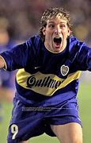
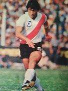
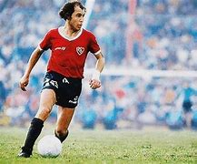
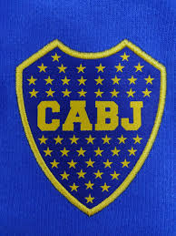
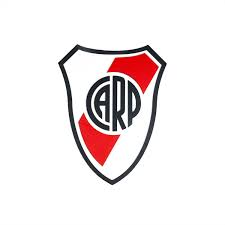
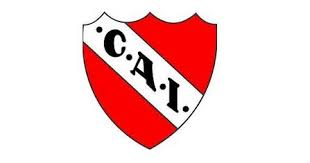

Inicio del futbol argentino
El fútbol se radicó en Argentina a mediados del siglo XIX, de la mano de inmigrantes británicos que llegaban a establecerse en el país, principalmente por la construcción del ferrocarril.
La práctica organizada del fútbol en la Argentina es de las más antiguas y de mayor tradición del mundo; es así que la gran mayoría de los clubes que compiten en los torneos de todas las divisiones superan largamente el siglo de vida.
Las fechas de fundación de los clubes más importantes del fútbol de Argentina que superan los 100 años de vida
La era amateur
En la primera década del siglo XX comenzó un proceso de popularización del fútbol mediante la creación explosiva de cientos de clubes, que canalizaron el ingreso masivo al deporte de los sectores populares, muchos de ellos trabajadores y descendientes de inmigrantes.
masificación del fútbol en Argentina produjo un paralelo alejamiento del mismo de los clubes vinculados a la comunidad británica y de la clase alta, que se volcaba principalmente al polo, y de la media alta, que lo hacía al rugby o al tenis.
La era del Profesionalismo
En 1931, tras un largo proceso que culminó con una huelga de futbolistas, se produjo una fractura, y el 18 de mayo de ese año, 18 clubes, entre ellos los de mayor convocatoria, decidieron retirarse de esa asociación, que era la entidad oficial, y formaron la Liga Argentina de Football, entidad disidente de la FIFA, dando comienzo al profesionalismo.
Dicha liga convivió cuatro años con los torneos organizados por la asociación, que seguían siendo amateurs, y que a pesar de ser "oficiales", estaban devaluados
Maximos referentes historicos de Argentina
En el futbol argentino han existido muchos jugadores que se han desatacado tanto en en la liga local como en el exterior entre algunos se encuentan Diego Armando Maradona, Lionel Messi, Alfredo Di Stéfano, Ángel Di María, José Manuel Moreno, Omar Sívori, Fernando Redondo, Raimundo Orsi, Claudio Caniggia, Carlos Tévez, Renato Cesarini, Luis Monti, Norberto "Tucho" Méndez, Miguel Brindisi, Sergio Agüero, Adolfo Pedernera,entre otros
Martín Palermo: Conocido por su paso en Boca Juniors, anotó 227 goles en 407 partidos
Daniel Alberto Passarella: es uno de los nombres más importantes en la historia del fútbol argentino. Nacido el 25 de mayo de 1953 en Chacabuco, Buenos Aires, Passarella se destacó como defensor central y es considerado uno de los mejores defensores de todos los tiempos
Ricardo Enrique Bochini: conocido como “El Bocha”, es una leyenda del fútbol argentino y uno de los máximos ídolos de Independiente. Nació el 25 de enero de 1954 en Zárate, Buenos Aires
Bochini era conocido por su visión de juego, precisión en los pases y habilidad para crear oportunidades de gol. Sus pases precisos se hicieron tan famosos que se les conoce como "pases bochinescos"
Clubes historicos de Argentina
Argentina cuenta con muchos clubes historicos tanto a nivel local como internacional aca abao estan los que considero los tres mas importantes
Boca Juniors: Conocido por su estadio, La Bombonera, y su apasionada hinchada, Boca ha ganado numerosos títulos nacionales e internacionales, incluyendo 6 Copas Libertadores
River Plate: Rival histórico de Boca, River Plate es uno de los clubes más exitosos de Argentina, con 4 Copas Libertadores y múltiples títulos de liga1.
Independiente: Apodado “El Rey de Copas”, Independiente ha ganado 7 Copas Libertadores, más que cualquier otro club argentino.
